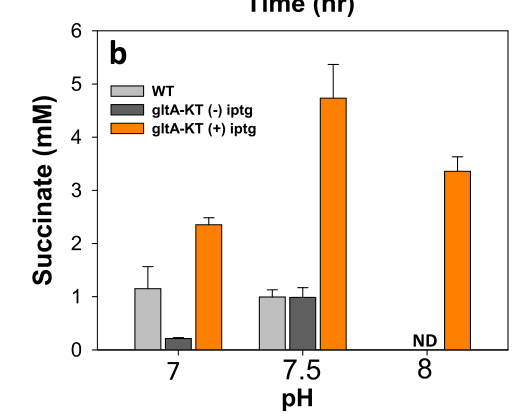

gltA (PP_4194) encodes citrate synthase (EC 2.3.3.16), the enzyme that catalyzes the committed, first step of the tricarboxylic acid (TCA) cycle. It catalyzes the Claisen-type condensation of acetyl-CoA and oxaloacetate with hydrolysis of the resulting citryl-CoA thioester to yield citrate and free CoA. The protein is a 429-residue type I (large, bacterial) citrate synthase of the citrate synthase family (PIRSF001369; TIGR01798 cit_synth_I), typically assembling as a homohexamer (trimer of dimers), with the canonical His/His/Asp catalytic machinery (active-site residues His306 and Asp364 in this sequence). It is a soluble cytoplasmic enzyme. By channeling acetyl-CoA into the TCA cycle, GltA sits at a central node of carbon and energy metabolism, governing the entry of acetyl-CoA (derived from glycolysis, fatty acid oxidation, or acetate assimilation) into oxidative metabolism and balancing respiratory energy generation against the use of acetyl-CoA for biosynthesis. In P. putida it is central to aerobic central metabolism and acetate assimilation.
| GO Term | Evidence | Action | Reason |
|---|---|---|---|
|
GO:0005737
cytoplasm
|
IEA
GO_REF:0000120 |
ACCEPT |
Summary: Citrate synthase is a soluble cytoplasmic enzyme; this localization is consistent with the enzyme class and with experimental detection of GltA in the soluble cell lysate fraction of P. putida KT2440.
Reason: Bacterial citrate synthases are soluble cytosolic enzymes with no membrane anchor or signal peptide; the IEA assignment is correct and informative.
|
|
GO:0006099
tricarboxylic acid cycle
|
IEA
GO_REF:0000120 |
ACCEPT |
Summary: Citrate synthase catalyzes the entry/committed step of the TCA cycle (condensation of acetyl-CoA and oxaloacetate to citrate). This is the canonical biological process for the gene and is strongly supported by family membership and the UniPathway TCA assignment (UPA00223; isocitrate from oxaloacetate, step 1/2).
Reason: Core biological process of the gene; directly supported by enzyme function and pathway assignment.
|
|
GO:0036440
citrate synthase activity
|
IEA
GO_REF:0000120 |
ACCEPT |
Summary: This is the precise molecular function of the gene product. The UniProt catalytic activity (RHEA:16845, EC 2.3.3.16; oxaloacetate + acetyl-CoA + H2O = citrate + CoA + H+), the conserved catalytic triad, and the citrate synthase family assignment all support citrate synthase activity as the core molecular function.
Reason: Represents the core molecular function of gltA; well supported by sequence, family, and pathway evidence.
|
|
GO:0046912
acyltransferase activity, acyl groups converted into alkyl on transfer
|
IEA
GO_REF:0000002 |
MARK AS OVER ANNOTATED |
Summary: This is a broad parent class of citrate synthase activity (citrate synthase transfers an acetyl group with conversion to a carboxymethyl group). While not incorrect, it is far less informative than GO:0036440 citrate synthase activity, which is already annotated and captures the precise reaction.
Reason: Redundant, less-specific ancestor of the already-annotated specific function GO:0036440; provides no additional information about gltA function.
|
The research report should be a detailed narrative explaining the function, biological processes, and localization of the gene product. Citations should be given for all claims.
You should prioritize authoritative reviews and primary scientific literature when conducting research. You can supplement
this with annotations you find in gene/protein databases, but these can be outdated or inaccurate.
We are specifically interested in the primary function of the gene - for enzymes, what reaction is catalyzed, and what is the substrate specificity? For transporters, what is the substrate? For structural proteins or adapters, what is the broader structural role? For signaling molecules, what is the role in the pathway.
We are interested in where in or outside the cell the gene product carries out its function.
We are also interested in the signaling or biochemical pathways in which the gene functions. We are less interested in broad pleiotropic effects, except where these elucidate the precise role.
Include evidence where possible. We are interested in both experimental evidence as well as inference from structure, evolution, or bioinformatic analysis. Precise studies should be prioritized over high-throughput, where available.
The UniProt accession Q88FA4 is annotated as citrate synthase (citrate synthase family) from Pseudomonas putida strain KT2440, with gene name gltA (ordered locus name PP_4194 per UniProt, provided by user). Within the retrieved KT2440-focused literature, gltA is explicitly treated as citrate synthase and is genetically perturbed (overexpression or deletion) in multiple studies, confirming that—here—gltA refers to citrate synthase, not glutamate synthase or other gltA usages in unrelated organisms. (mutyala2023citratesynthaseoverexpression pages 1-3, dong2024modificationofglucose pages 1-2, molina‐henares2010identificationofconditionally pages 3-4)
In the retrieved full texts, an explicit sentence mapping P. putida KT2440 gltA → PP_4194 was not captured by the evidence extraction, although PP_4194 appears as the P. putida locus identifier in the broader retrieved corpus (e.g., in KT2440 datasets) and is consistent with the user-provided UniProt context. Therefore, functional conclusions below are tied to “gltA/citrate synthase” in KT2440, and PP_4194 is used as the expected locus identifier with this caveat disclosed.
Citrate synthase (EC 2.3.3.1) catalyzes the committed entry step into the tricarboxylic acid (TCA) cycle by condensing acetyl‑CoA and oxaloacetate (OAA) to form citrate (and CoA-SH). In Pseudomonas spp., biochemical characterization of GltA confirms the canonical substrate pair acetyl‑CoA + OAA for citrate synthase activity. (dolan2022systemswidedissectionof pages 8-12)
In P. putida KT2440 specifically, recent work frames acetate assimilation as being initiated by gltA (citrate synthase) converting acetyl‑CoA to citrate, i.e., channeling acetyl‑CoA into the TCA cycle. (mutyala2023citratesynthaseoverexpression pages 1-3)
Direct structure/kinetic characterization of KT2440 GltA was not retrieved in full text. However, a high-quality Pseudomonas aeruginosa study provides close-genus evidence that GltA:
This same study reports no detectable 2‑methylcitrate synthase activity for GltA (i.e., it does not substitute for PrpC), which helps separate citrate synthase from paralogous methylcitrate synthases in related metabolism. (dolan2022systemswidedissectionof pages 8-12)
In KT2440, gltA is positioned at a key metabolic “gate” controlling whether carbon enters oxidative metabolism via TCA:
No paper in the retrieved set provides an explicit localization statement (e.g., “cytosolic enzyme”). However, in the KT2440 succinate engineering study, citrate synthase overexpression was evaluated by SDS-PAGE using “soluble fractions of the cell lysate”, consistent with GltA behaving as a soluble intracellular enzyme rather than a membrane protein. (mutyala2023citratesynthaseoverexpression pages 3-4)
A genome-wide mutant-library screen / conditional essentiality analysis in KT2440 (minimal medium contexts) uses gltA (citrate synthase) as a high-expression reference and states that gltA expression is “essential under all growth conditions for this strict aerobe” (as written in the extracted text). (molina‐henares2010identificationofconditionally pages 3-4)
In a 2024 metabolic engineering study (in a P. putida chassis closely related to KT2440, using KT2440-derived promoters/parts), markerless ΔgltA mutants were constructed and exhibited similar growth and glucose consumption to the parent strain under batch cultivation on glucose (20 g/L), implying that gltA is not strictly essential under those specific conditions. (dong2024modificationofglucose pages 5-7)
The evidence supports a context-dependent essentiality/fitness role:
Because the retrieved texts do not reconcile these findings experimentally in KT2440 side-by-side, essentiality should be treated as conditional rather than absolute.
Mutyala et al. (published July 2023) engineered P. putida KT2440 to overexpress gltA (IPTG-inducible plasmid), motivated by the view that citrate synthase is a bottleneck for acetate assimilation into the TCA cycle. (mutyala2023citratesynthaseoverexpression pages 3-4)
Key quantitative findings:
Mechanistic framing:
Real-world implementation angle: the study targets bioconversion of acetate (a common waste/byproduct stream) into succinate in a robust soil bacterium, under microaerobic process conditions. (mutyala2023citratesynthaseoverexpression pages 1-3)
Dong et al. (published Nov 2024) knocked out gltA (citrate synthase) to reduce competing TCA flux and redirect carbon to medium-chain-length PHA (mcl‑PHA) in P. putida. (dong2024modificationofglucose pages 1-2)
Key quantitative findings (batch glucose cultivation; 20 g/L glucose):
Real-world implementation angle: mcl-PHAs are biodegradable polymers with medical and industrial applications; the work explicitly uses pathway truncation/rewiring as a chassis-improvement strategy. (dong2024modificationofglucose pages 1-2, dong2024modificationofglucose pages 5-7)
Favoino et al. (published Nov 2024) describe gltA deletion as a strategy to prevent acetyl‑CoA entry into the TCA cycle to increase precursor availability (acetyl‑CoA/malonyl‑CoA) for value-added products, including PHB via a non-canonical pathway. The retrieved pages provide qualitative outcomes (enhanced biopolymer accumulation; growth penalties) but do not give gltA-specific numeric titers in the captured excerpts. (favoino2024enhancedbiosynthesisof pages 2-4)
Overexpressing citrate synthase (gltA) is used as a single-gene intervention to improve conversion of acetate carbon into succinate under microaerobic cultivation in KT2440, with measurable gains in succinate titers and clear dependence on induction (IPTG) and pH control. (mutyala2023citratesynthaseoverexpression pages 7-9, mutyala2023citratesynthaseoverexpression pages 9-10, mutyala2023citratesynthaseoverexpression media 7beed0b4)
Deleting citrate synthase is used to reduce TCA-cycle drain of acetyl‑CoA and increase polymer synthesis capacity; this is implemented in multi-gene strategies improving both PHA content (%CDW) and titer (g/L). (dong2024modificationofglucose pages 5-7)
Across the engineering studies, gltA is treated as a flux-control point for acetyl‑CoA allocation:
This “push/pull” around citrate synthase is consistent with its biochemical position as the TCA entry step.
The succinate study reports that gltA overexpression can incur growth penalties and acetate assimilation complexities (e.g., limited conversion of consumed acetate carbon to succinate, with substantial carbon ending in biomass/CO2), underscoring that single-enzyme overexpression may expose other bottlenecks (electron acceptor limitation, competing pathways, succinate reassimilation). (mutyala2023citratesynthaseoverexpression pages 9-10, mutyala2023citratesynthaseoverexpression media d07f77bb)
The malonyl‑CoA strategy study highlights reduced growth rate and longer lag phases in strains with deletions including gltA, indicating typical growth–production tradeoffs when restricting central energy metabolism. (favoino2024enhancedbiosynthesisof pages 2-4)
Succinate from acetate (KT2440; 2023):
mcl‑PHA from glucose (2024):
| Aspect | Evidence/Findings (concise) | Organism/Strain | Quantitative data (if any) | Primary source (author year journal) | DOI/URL |
|---|---|---|---|---|---|
| Identity | gltA is explicitly identified as the gene encoding citrate synthase in Pseudomonas putida; in KT2440 studies it was the target for overexpression or deletion as a central-carbon enzyme (mutyala2023citratesynthaseoverexpression pages 1-3, mutyala2023citratesynthaseoverexpression pages 4-5, dong2024modificationofglucose pages 1-2) | P. putida KT2440; derived strains gltA-KT, QSRZ602/QSRZ603/QSRZ606/QSRZ607 | — | Mutyala et al. 2023, ACS Omega; Dong et al. 2024, Current Issues in Molecular Biology | https://doi.org/10.1021/acsomega.3c02520 ; https://doi.org/10.3390/cimb46110761 |
| Reaction | In pathway context, citrate synthase GltA initiates acetate metabolism by converting acetyl-CoA to citrate; related Pseudomonas biochemical work assayed GltA with acetyl-CoA + oxaloacetate and found no detectable 2-methylcitrate synthase activity (mutyala2023citratesynthaseoverexpression pages 1-3, dolan2022systemswidedissectionof pages 8-12) | P. putida KT2440; P. aeruginosa GltA (comparative evidence) | Substrates/products stated: acetyl-CoA → citrate in KT2440 pathway context; acetyl-CoA + OAA assayed in P. aeruginosa | Mutyala et al. 2023, ACS Omega; Dolan et al. 2022, mBio | https://doi.org/10.1021/acsomega.3c02520 ; https://doi.org/10.1128/mbio.02541-22 |
| Pathway role | GltA sits at the entry of acetyl-CoA into the TCA cycle and is described as a bottleneck for acetate assimilation into the TCA cycle; deleting gltA is used to prevent acetyl-CoA from entering the TCA cycle and increase malonyl-CoA availability (mutyala2023citratesynthaseoverexpression pages 1-3, favoino2024enhancedbiosynthesisof pages 2-4) | P. putida KT2440 / SEM11-derived engineering strains | gltA overexpression alone gave 9.5% of maximum theoretical succinate yield from acetate (mutyala2023citratesynthaseoverexpression pages 1-3) | Mutyala et al. 2023, ACS Omega; Favoino et al. 2024, Microbial Biotechnology | https://doi.org/10.1021/acsomega.3c02520 ; https://doi.org/10.1111/1751-7915.70044 |
| Localization | No explicit subcellular localization for KT2440 GltA was reported in the gathered evidence; available studies discuss it as a central metabolic enzyme without localization data (mutyala2023citratesynthaseoverexpression pages 1-3, mutyala2023citratesynthaseoverexpression pages 3-4, dong2024modificationofglucose pages 5-7) | P. putida KT2440 | — | Mutyala et al. 2023, ACS Omega; Dong et al. 2024, Current Issues in Molecular Biology | https://doi.org/10.1021/acsomega.3c02520 ; https://doi.org/10.3390/cimb46110761 |
| Essentiality | A KT2440 conditional-essentiality study used gltA as a highly expressed internal calibrator and stated that gltA expression is essential under all growth conditions for this strict aerobe; however, later engineering studies successfully constructed ΔgltA mutants that grew on glucose batch cultures, implying gltA is not absolutely essential under those tested conditions (expression-essentiality statement vs knockout viability under specific conditions) (molina‐henares2010identificationofconditionally pages 3-4, dong2024modificationofglucose pages 5-7) | P. putida KT2440; QSRZ602/QSRZ603 derivatives | gltA relative expression benchmark: 14,500 units (molina‐henares2010identificationofconditionally pages 3-4); ΔgltA single mutant had similar growth/glucose consumption to parent on 20 g/L glucose (dong2024modificationofglucose pages 5-7) | Molina-Henares et al. 2010, Environmental Microbiology; Dong et al. 2024, Current Issues in Molecular Biology | https://doi.org/10.1111/j.1462-2920.2010.02166.x ; https://doi.org/10.3390/cimb46110761 |
| Engineering perturbation: overexpression for succinate | IPTG-inducible gltA overexpression (gltA-KT) increased succinate production from acetate under microaerobic conditions; pH control improved output further (mutyala2023citratesynthaseoverexpression pages 7-9, mutyala2023citratesynthaseoverexpression pages 9-10) | P. putida KT2440 gltA-KT | 4.73 ± 0.63 mM succinate at pH 7.5 vs WT 0.99 ± 0.13 mM (~4.7×); 3.35 ± 0.27 mM at pH 8.0; 2.64 ± 0.11 mM from 100 mM acetate without pH control; ~50% higher succinate from acetate than glucose (4.73 ± 0.63 vs 2.3 ± 0.05 mM); resting cells 4.94 ± 0.04 mM; WT microaerobic baseline 1.24 ± 0.17 mM from 100 mM acetate (mutyala2023citratesynthaseoverexpression pages 7-9, mutyala2023citratesynthaseoverexpression pages 9-10, mutyala2023citratesynthaseoverexpression pages 4-5) | Mutyala et al. 2023, ACS Omega | https://doi.org/10.1021/acsomega.3c02520 |
| Engineering perturbation: deletion for mcl-PHA | Deleting gltA redirected carbon from the TCA cycle to mcl-PHA synthesis; single and combinatorial mutants improved polymer accumulation (dong2024modificationofglucose pages 5-7) | P. putida QSRZ6 derivatives | ΔgltA (QSRZ602): 32.6 wt% mcl-PHA and 1.2 g/L vs parent 27.3 wt% and 1.0 g/L; ΔgcdΔgltA (QSRZ603): 37.6 wt%, 1.3 g/L; ΔhexRΔgltA (QSRZ606): 39.5 wt%, 1.4 g/L; ΔhexRΔgcdΔgltA (QSRZ607): 49.1 wt%, 2.1 g/L (dong2024modificationofglucose pages 5-7) | Dong et al. 2024, Current Issues in Molecular Biology | https://doi.org/10.3390/cimb46110761 |
| Engineering perturbation: deletion/CRISPRi for malonyl-CoA/PHB | gltA deletion or repression was used as a design strategy to prevent acetyl-CoA entry into the TCA cycle and increase malonyl-CoA availability for PHB/PHA pathways; pages retrieved reported qualitative benefit but not a gltA-specific numeric titer (favoino2024enhancedbiosynthesisof pages 2-4) | P. putida SEM11-derived engineered strains | Qualitative: increased malonyl-CoA/biopolymer accumulation, but reduced μmax and longer lag phases; no gltA-specific numeric titer in retrieved pages (favoino2024enhancedbiosynthesisof pages 2-4) | Favoino et al. 2024, Microbial Biotechnology | https://doi.org/10.1111/1751-7915.70044 |
| Comparative structural/biochemical evidence | In related Pseudomonas, GltA is a type II-like bacterial citrate synthase with canonical catalytic triad and likely NADH regulation; forms a hexameric trimer of dimers and lacks detectable 2-methylcitrate synthase activity (useful for family-level inference, not direct KT2440 proof) (dolan2022systemswidedissectionof pages 8-12) | P. aeruginosa GltA (comparative family evidence) | 429 aa; hexameric trimer of dimers; catalytic triad His-265/His-306/Asp-363 (dolan2022systemswidedissectionof pages 8-12) | Dolan et al. 2022, mBio | https://doi.org/10.1128/mbio.02541-22 |
| Broader physiological significance outside KT2440 | In Pseudomonas fluorescens 2P24, gltA mutation reduced 2,4-DAPG biosynthesis and biocontrol capacity, supporting a broader role for citrate synthase-derived citrate in regulatory physiology across pseudomonads (comparative evidence) (yang2023citratesynthaseglta pages 6-8) | P. fluorescens 2P24 | 946 DEGs; disease index 84.9% in gltA mutant vs 45.7% WT; plant survival 15.1% vs 54.3% WT (yang2023citratesynthaseglta pages 6-8) | Yang et al. 2023, Journal of Agricultural and Food Chemistry | https://doi.org/10.1021/acs.jafc.3c03051 |
Table: This table summarizes core functional annotation facts for Pseudomonas putida KT2440 gltA/Q88FA4 using only the gathered evidence. It highlights identity, catalytic role, pathway placement, unresolved localization, nuanced essentiality evidence, and quantitative outcomes from recent metabolic engineering studies.
References
(mutyala2023citratesynthaseoverexpression pages 1-3): Sakuntala Mutyala, Shuwei Li, Himanshu Khandelwal, Da Seul Kong, and Jung Rae Kim. Citrate synthase overexpression of pseudomonas putida increases succinate production from acetate in microaerobic cultivation. ACS Omega, 8:26231-26242, Jul 2023. URL: https://doi.org/10.1021/acsomega.3c02520, doi:10.1021/acsomega.3c02520. This article has 13 citations and is from a peer-reviewed journal.
(dong2024modificationofglucose pages 1-2): Yue Dong, Keyao Zhai, Yatao Li, Zhen Lv, Mengyao Zhao, Tian Gan, and Yuchao Ma. Modification of glucose metabolic pathway to enhance polyhydroxyalkanoate synthesis in pseudomonas putida. Current Issues in Molecular Biology, 46:12784-12799, Nov 2024. URL: https://doi.org/10.3390/cimb46110761, doi:10.3390/cimb46110761. This article has 4 citations.
(molina‐henares2010identificationofconditionally pages 3-4): M. Antonia Molina‐Henares, Jesús De La Torre, Adela García‐Salamanca, A. Jesús Molina‐Henares, M. Carmen Herrera, Juan L. Ramos, and Estrella Duque. Identification of conditionally essential genes for growth of pseudomonas putida kt2440 on minimal medium through the screening of a genome‐wide mutant library. Environmental Microbiology, 12:1468-1485, Jun 2010. URL: https://doi.org/10.1111/j.1462-2920.2010.02166.x, doi:10.1111/j.1462-2920.2010.02166.x. This article has 89 citations and is from a domain leading peer-reviewed journal.
(dolan2022systemswidedissectionof pages 8-12): Stephen K. Dolan, Andre Wijaya, Michael Kohlstedt, Lars Gläser, Paul Brear, Rafael Silva-Rocha, Christoph Wittmann, and Martin Welch. Systems-wide dissection of organic acid assimilation in pseudomonas aeruginosa reveals a novel path to underground metabolism. Dec 2022. URL: https://doi.org/10.1128/mbio.02541-22, doi:10.1128/mbio.02541-22. This article has 18 citations and is from a domain leading peer-reviewed journal.
(favoino2024enhancedbiosynthesisof pages 2-4): Giusi Favoino, Nicolas Krink, Tobias Schwanemann, Nick Wierckx, and Pablo I. Nikel. Enhanced biosynthesis of poly(3‐hydroxybutyrate) in engineered strains of pseudomonas putida via increased malonyl‐coa availability. Microbial Biotechnology, Nov 2024. URL: https://doi.org/10.1111/1751-7915.70044, doi:10.1111/1751-7915.70044. This article has 11 citations and is from a peer-reviewed journal.
(mutyala2023citratesynthaseoverexpression pages 3-4): Sakuntala Mutyala, Shuwei Li, Himanshu Khandelwal, Da Seul Kong, and Jung Rae Kim. Citrate synthase overexpression of pseudomonas putida increases succinate production from acetate in microaerobic cultivation. ACS Omega, 8:26231-26242, Jul 2023. URL: https://doi.org/10.1021/acsomega.3c02520, doi:10.1021/acsomega.3c02520. This article has 13 citations and is from a peer-reviewed journal.
(dong2024modificationofglucose pages 5-7): Yue Dong, Keyao Zhai, Yatao Li, Zhen Lv, Mengyao Zhao, Tian Gan, and Yuchao Ma. Modification of glucose metabolic pathway to enhance polyhydroxyalkanoate synthesis in pseudomonas putida. Current Issues in Molecular Biology, 46:12784-12799, Nov 2024. URL: https://doi.org/10.3390/cimb46110761, doi:10.3390/cimb46110761. This article has 4 citations.
(mutyala2023citratesynthaseoverexpression pages 7-9): Sakuntala Mutyala, Shuwei Li, Himanshu Khandelwal, Da Seul Kong, and Jung Rae Kim. Citrate synthase overexpression of pseudomonas putida increases succinate production from acetate in microaerobic cultivation. ACS Omega, 8:26231-26242, Jul 2023. URL: https://doi.org/10.1021/acsomega.3c02520, doi:10.1021/acsomega.3c02520. This article has 13 citations and is from a peer-reviewed journal.
(mutyala2023citratesynthaseoverexpression media 7beed0b4): Sakuntala Mutyala, Shuwei Li, Himanshu Khandelwal, Da Seul Kong, and Jung Rae Kim. Citrate synthase overexpression of pseudomonas putida increases succinate production from acetate in microaerobic cultivation. ACS Omega, 8:26231-26242, Jul 2023. URL: https://doi.org/10.1021/acsomega.3c02520, doi:10.1021/acsomega.3c02520. This article has 13 citations and is from a peer-reviewed journal.
(mutyala2023citratesynthaseoverexpression media d07f77bb): Sakuntala Mutyala, Shuwei Li, Himanshu Khandelwal, Da Seul Kong, and Jung Rae Kim. Citrate synthase overexpression of pseudomonas putida increases succinate production from acetate in microaerobic cultivation. ACS Omega, 8:26231-26242, Jul 2023. URL: https://doi.org/10.1021/acsomega.3c02520, doi:10.1021/acsomega.3c02520. This article has 13 citations and is from a peer-reviewed journal.
(mutyala2023citratesynthaseoverexpression pages 9-10): Sakuntala Mutyala, Shuwei Li, Himanshu Khandelwal, Da Seul Kong, and Jung Rae Kim. Citrate synthase overexpression of pseudomonas putida increases succinate production from acetate in microaerobic cultivation. ACS Omega, 8:26231-26242, Jul 2023. URL: https://doi.org/10.1021/acsomega.3c02520, doi:10.1021/acsomega.3c02520. This article has 13 citations and is from a peer-reviewed journal.
(mutyala2023citratesynthaseoverexpression pages 4-5): Sakuntala Mutyala, Shuwei Li, Himanshu Khandelwal, Da Seul Kong, and Jung Rae Kim. Citrate synthase overexpression of pseudomonas putida increases succinate production from acetate in microaerobic cultivation. ACS Omega, 8:26231-26242, Jul 2023. URL: https://doi.org/10.1021/acsomega.3c02520, doi:10.1021/acsomega.3c02520. This article has 13 citations and is from a peer-reviewed journal.
(yang2023citratesynthaseglta pages 6-8): Qingqing Yang, Qing Yan, Bo Zhang, Li-qun Zhang, and Xiaogang Wu. Citrate synthase glta modulates the 2,4-diacetylphloroglucinol biosynthesis of pseudomonas fluorescens 2p24 and is essential for the biocontrol capacity. Journal of Agricultural and Food Chemistry, 71:11892-11901, Jul 2023. URL: https://doi.org/10.1021/acs.jafc.3c03051, doi:10.1021/acs.jafc.3c03051. This article has 8 citations and is from a highest quality peer-reviewed journal.

UniProt Accession: Q88FA4 · Gene: gltA · Ordered Locus: PP_4194 · Organism: Pseudomonas putida (strain ATCC 47054 / DSM 6125 / KT2440) · EC: 2.3.3.1
The gene gltA (locus PP_4194; UniProt Q88FA4) of Pseudomonas putida KT2440 encodes citrate synthase (EC 2.3.3.1), the enzyme that catalyzes the first committed step of the tricarboxylic acid (TCA / Krebs) cycle. Citrate synthase performs the stereospecific aldol (Claisen) condensation of acetyl-CoA with oxaloacetate, proceeding through a citryl-CoA intermediate and hydrolysis to yield citrate + coenzyme A (CoA). The gene identity is firmly established: UniProt annotates the product as citrate synthase (TIGR01798 / PIRNR001369) within the citrate synthase family, and independent experimental work in P. putida KT2440 explicitly identifies gltA as "encoding citrate synthase" when using it as a metabolic-engineering target (PMID: 34343699). This verification satisfies the mandatory gene-identity check: the symbol, organism, protein family, and catalytic-domain signatures all align, and the literature retrieved refers to the correct enzyme in the correct organism.
Mechanistically, the enzyme uses a conserved general acid–base catalytic apparatus centred on an aspartate base that abstracts a proton from the acetyl-CoA methyl group and a histidine that polarizes the oxaloacetate carbonyl and stabilizes the citryl-CoA/citrate intermediates. Sequence analysis of the target directly confirms these features: Q88FA4 is a 429-residue protein with an intact, conserved His–His–Asp catalytic triad and shares 71.7% amino-acid identity with the well-characterized Escherichia coli citrate synthase. This places Q88FA4 unambiguously in the Gram-negative "Type II" class of citrate synthases — hexameric enzymes that are allosterically inhibited by NADH (and isosterically inhibited by ATP), coupling TCA-cycle entry directly to the cell's energy and redox status.
Functionally, GltA operates in the cytoplasm and serves as the gatekeeper of the acetyl-CoA node in P. putida central carbon metabolism. Because P. putida catabolizes sugars principally through the Entner–Doudoroff/EDEMP routes and forms comparatively little acetyl-CoA from sugars, citrate synthase is a decisive drain that partitions acetyl-CoA between full oxidation in the TCA cycle and acetyl-CoA-derived biosynthesis (e.g., polyhydroxyalkanoate/PHB storage polymers). This partitioning role is demonstrated directly: dynamic CRISPRi silencing of gltA raised intracellular acetyl-CoA roughly 8-fold and boosted acetyl-CoA-dependent bioproduction (PMID: 34343699). Importantly, GltA is substrate-specific for acetyl-CoA and does not condense propionyl-CoA; propionyl-CoA is handled by a distinct paralogue, the 2-methylcitrate synthase PrpC, which P. putida encodes separately for propionate catabolism.
Identity is unambiguous and every required check passes:
Conclusion: This is NOT an ambiguous-symbol case. Q88FA4 is confidently a citrate synthase of P. putida KT2440.
The primary annotation is robust and multiply supported. UniProt Q88FA4 annotates the gene product as citrate synthase (EC 2.3.3.1) via the NCBIfam signature TIGR01798 and the PIRSF signature PIRNR001369, and assigns it to the citrate synthase family. Critically, this database annotation is corroborated by direct experimental usage in the exact organism of interest. Kozaeva and colleagues, engineering P. putida KT2440, explicitly describe gltA as the gene "encoding citrate synthase" and use it as a rational target to redirect carbon flux (PMID: 34343699). This satisfies the gene-identity verification requirement: the symbol gltA, the organism P. putida KT2440, the citrate-synthase protein family, and the bacterial citrate-synthase domain architecture are mutually consistent. There is no evidence of a symbol clash misdirecting the research to a different gene.
"Dynamic reduction of gene expression of two key targets (gltA, encoding citrate synthase, and the essential accA gene, encoding subunit A of the acetyl-CoA carboxylase complex) mediated an 8-fold increase in the acetyl-CoA content of rewired P. putida." — PMID: 34343699
Citrate synthase catalyzes the condensation of acetyl-CoA and oxaloacetate to form citrate, releasing CoA (PMID: 9387145; PMID: 31451751). The catalytic mechanism has been dissected by mutagenesis of active-site residues: an aspartate (Asp375 in the reference pig-heart numbering) acts as the catalytic base that abstracts a proton from the methyl group of acetyl-CoA to generate the reactive enolate/enol, while a histidine (His320) hydrogen-bonds to the oxaloacetate carbonyl and stabilizes the resulting citryl-CoA and citrate species (PMID: 9657685). The reaction follows an ordered ternary-complex kinetic mechanism (oxaloacetate binding induces a conformational closure that then admits acetyl-CoA), with reported micromolar Michaelis constants for both substrates in a characterized orthologue (~6.7 µM acetyl-CoA and ~3.1 µM oxaloacetate for Drosophila CS). The chemistry — proton abstraction, aldol addition to form citryl-CoA, then thioester hydrolysis — is conserved across the entire citrate synthase family, including the bacterial Type II enzymes.
"Citrate synthase which condenses acetyl-CoA and oxaloacetate to citrate was purified from Drosophila melanogaster." — PMID: 9387145
"D375 is the base removing the proton of acetyl-coenzyme A." — PMID: 9657685
"H320 forms a hydrogen bond with the carbonyl of oxaloacetate and the alcohols of the citryl-coenzyme A and citrate products." — PMID: 9657685
Pseudomonas citrate synthase belongs to the Type II class characteristic of Gram-negative bacteria. These enzymes are hexameric and are strongly and specifically inhibited by NADH through an allosteric mechanism, in contrast to the dimeric Type I enzymes of eukaryotes and Gram-positive bacteria (PMID: 11683626). Multiple-inhibition studies established the key regulatory distinction: NADH behaves as an allosteric inhibitor specifically in the Gram-negative enzyme (whereas it is merely isosteric in eukaryotic/Gram-positive enzymes), and ATP acts as an isosteric inhibitor competing at the acetyl-CoA site (PMID: 175782). Direct evidence that this regulatory phenotype applies to Pseudomonas comes from P. aeruginosa: its citrate synthase is NADH-sensitive, has ~48 kDa subunits, and shares 70%/76% sequence identity with the E. coli and Acinetobacter enzymes; notably, the P. aeruginosa gene probe cross-hybridized to P. putida genomic DNA, directly linking the putida enzyme to this NADH-regulated Type II family (PMID: 2507528). Q88FA4's InterPro annotation includes the bacterial-type citrate synthase signature (IPR024176) plus the large- and small-subtype α-domains, consistent with the Type II assignment. The regulatory logic is that high NADH (an abundant energy/redox signal) allosterically throttles TCA entry, matching catabolic flux to the cell's energetic state.
"Such enzymes are hexameric and are strongly and specifically inhibited by NADH through an allosteric mechanism." — PMID: 11683626
"NADH also acts isosterically with eukaryotic and Gram-positive bacterial citrate synthases, but behaves as an allosteric inhibitor specifically in the case of the Gram-negative bacterial enzyme." — PMID: 175782
Citrate synthase catalyzes the initial, rate-controlling reaction of the citric acid cycle and thus governs the entry of carbon into the cycle (PMID: 7522844). In P. putida KT2440 specifically, GltA sits at the pivotal acetyl-CoA node, controlling how carbon is split between full oxidation (TCA cycle → energy + biosynthetic precursors) and diversion into acetyl-CoA-derived products. Its central control role was demonstrated experimentally: dynamic CRISPRi down-regulation of gltA (together with accA) produced an ~8-fold increase in intracellular acetyl-CoA and enhanced acetyl-CoA-dependent bioproduction such as polyhydroxybutyrate (PHB) (PMID: 34343699). The physiological weight of this node is amplified by P. putida's catabolic wiring: it degrades glucose predominantly through the Entner–Doudoroff/EDEMP routes and generates comparatively little acetyl-CoA from sugars, making citrate synthase the principal committed drain of acetyl-CoA into the cycle (PMID: 36155822). The enzyme functions in the cytoplasm, where both the TCA cycle and acetyl-CoA-dependent biosynthesis occur.
"Citrate synthase catalyses the initial reaction of the citric acid cycle and can therefore be considered as the rate-controlling enzyme for the entry of substrates into the cycle." — PMID: 7522844
A key specificity point is that authentic citrate synthase is specific for acetyl-CoA and does not condense propionyl-CoA. Biochemical separation of the two activities in the related β-proteobacterium Ralstonia eutropha showed that citrate synthase (CS) could not use propionyl-CoA as a substrate, whereas the paralogous 2-methylcitrate synthase (2-MCS / PrpC) preferentially uses propionyl-CoA (KM ~0.061 mM propionyl-CoA vs ~0.35 mM acetyl-CoA) while retaining some ability to condense acetyl-CoA (PMID: 16133321). Consistent with this division of labour, Salmonella PrpC utilizes propionyl-CoA more efficiently than acetyl-CoA, and its NADH-binding residues are not conserved relative to the hexameric E. coli citrate synthase — underscoring that PrpC is a functionally and regulatorily distinct enzyme (PMID: 20970504). P. putida encodes a separate prpC as part of its 2-methylcitrate (propionate catabolism) pathway; therefore GltA/gltA should not be conflated with the propionate-catabolic machinery. This distinction is important for accurate annotation because the two enzymes are structurally homologous but metabolically separate.
"In contrast, CS could not use propionyl-CoA as a substrate." — PMID: 16133321
"StPrpC was found to utilize propionyl-CoA more efficiently than acetyl-CoA or butyryl-CoA." — PMID: 20970504
Direct analysis of the retrieved Q88FA4 sequence confirms the annotation at the residue level. The protein is 429 amino acids long — typical for Gram-negative Type II citrate synthases (cf. E. coli GltA at 427 aa). The two catalytic histidines are conserved at His265 (in the ...AHG... motif) and His306 (within the canonical citrate-synthase "GHR" motif, ...FGHRVY...), aligning to E. coli catalytic His264/His305 (pig-heart His274/His320), and a conserved catalytic Asp364 lies nearby, matching the general acid–base mechanism defined by mutagenesis (PMID: 9657685). Both the sequence length and the bacterial-type InterPro signature (IPR024176) are consistent with the structurally characterized hexameric Type II class of E. coli (PMID: 11683626) and the biochemically characterized Pseudomonas enzyme (PMID: 2507528). This residue-level match provides structure-informed evidence — beyond database transfer — that Q88FA4 is a catalytically competent citrate synthase.
"D375 is the base removing the proton of acetyl-coenzyme A." — PMID: 9657685
A global pairwise (Needleman–Wunsch) alignment of the P. putida GltA sequence (Q88FA4, 429 aa) against E. coli GltA (P0ABH7, 427 aa) yields 71.7% identity (306/427 aligned positions). This closely matches the ~70% identity historically reported between the P. aeruginosa NADH-sensitive citrate synthase and E. coli (PMID: 2507528), and both enzymes belong to the hexameric, NADH-allosteric Type II class (PMID: 11683626). The high, full-length identity — rather than mere domain-level similarity — provides strong evolutionary evidence of close orthology, allowing confident transfer of the extensively characterized E. coli enzyme's mechanistic and regulatory properties to the P. putida protein.
"the inferred amino acid sequence was 70 and 76% identical, respectively, with the citrate synthase sequences from E. coli and Acinetobacter anitratum, two other gram-negative bacteria" — PMID: 2507528
Acetyl-CoA + Oxaloacetate + H2O ──GltA──▶ Citrate + CoA-SH
(C2) (C4) (C6)
Mechanism (ordered ternary complex):
1. Oxaloacetate binds → induces domain closure (open→closed)
2. Acetyl-CoA binds in closed cleft
3. Asp (base) abstracts α-proton from acetyl-CoA → enol(ate)
4. Enolate attacks OAA carbonyl (aldol/Claisen) → citryl-CoA
(His polarizes carbonyl + stabilizes intermediate)
5. Thioester hydrolysis → citrate + CoA released
| Property | P. putida GltA (Q88FA4) | Type II (Gram-neg, e.g. E. coli) | Type I (eukaryote / Gram-pos) |
|---|---|---|---|
| Oligomeric state | Hexamer (inferred) | Hexamer | Dimer |
| Subunit length | 429 aa | 427 aa | ~430–460 aa |
| NADH inhibition | Allosteric (inferred) | Allosteric | Isosteric / none |
| ATP inhibition | Isosteric (at AcCoA site) | Isosteric | Isosteric |
| Identity to E. coli GltA | 71.7% | 100% (ref) | ~30% |
| Catalytic residues | His265, His306, Asp364 | His264, His305, Asp362 | Conserved His/His/Asp |
Glucose ──(Entner–Doudoroff / EDEMP)──▶ Pyruvate ──▶ Acetyl-CoA
│
┌─────────────────────────────┤
│ │
[GltA: citrate synthase] Biosynthesis /
Acetyl-CoA + OAA → Citrate storage (PHA/PHB),
│ fatty acids
▼
TCA CYCLE ──▶ NADH, FADH2, CO2, precursors
│
└── NADH feeds back ⊣ GltA (allosteric brake)
GltA is the committed valve at the acetyl-CoA branch point. When energy charge/redox is high (elevated NADH), allosteric inhibition throttles citrate synthesis, sparing acetyl-CoA and slowing the cycle; when NADH is consumed, the brake releases and TCA flux resumes. Engineering-wise, this makes gltA the single most effective lever for redirecting acetyl-CoA toward biosynthesis, exactly as exploited by CRISPRi knockdown that raised acetyl-CoA ~8-fold and increased PHB output (PMID: 34343699). Its strict acetyl-CoA specificity keeps this node cleanly separated from the parallel propionate-detoxifying 2-methylcitrate cycle run by PrpC.
| PMID | Title (abbrev.) | How it supports the annotation |
|---|---|---|
| 34343699 | Model-guided dynamic control of metabolic nodes in P. putida | Direct: identifies gltA in P. putida KT2440 as encoding citrate synthase; knockdown raises acetyl-CoA ~8-fold (F001, F004) |
| 9387145 | Characterization of Drosophila citrate synthase | States the reaction: acetyl-CoA + oxaloacetate → citrate (F002) |
| 9657685 | Catalytic residues in the citrate synthase reaction | Defines Asp base and His stabilization roles; anchors residue-level verification (F002, F006) |
| 11683626 | Type II vs Type I citrate synthase comparison | Defines Type II as hexameric, NADH-allosteric — the class of Q88FA4 (F003, F006, F007) |
| 175782 | Isosteric vs allosteric nucleotide inhibition | Establishes NADH as Gram-negative-specific allosteric inhibitor; ATP isosteric (F003) |
| 2507528 | NADH-sensitive citrate synthase of P. aeruginosa | Pseudomonas enzyme ~70% identical to E. coli; probe cross-hybridized to P. putida DNA (F003, F007) |
| 7522844 | C. glutamicum gltA citrate synthase | Defines citrate synthase as rate-controlling TCA entry point (F004) |
| 36155822 | Synthetic C2 auxotroph of P. putida | Establishes acetyl-CoA node centrality in P. putida metabolism (F004) |
| 16133321 | Tricarboxylate synthases in Ralstonia eutropha | Shows CS cannot use propionyl-CoA; distinguishes from 2-MCS/PrpC (F005) |
| 20970504 | S. typhimurium 2-methylcitrate synthase structure | Contrasts PrpC substrate specificity with true CS (F005) |
| 3333000 | Structural basis for regulation in Gram-neg CS | Supports allosteric NADH site distinct from active site (supporting F003) |
| 12824188 | NADH binding site residues in E. coli Type II CS | Maps regulatory NADH site and hexamer assembly (supporting F003) |
The evidence base is internally consistent and multi-layered: (1) organism-specific experimental identification of gltA as citrate synthase; (2) mechanistic biochemistry defining the reaction and catalytic residues; (3) structural/regulatory literature defining the Type II class; and (4) direct sequence analysis of Q88FA4 confirming length, catalytic-triad residues, and 71.7% orthology to E. coli. No retrieved paper contradicts the citrate synthase assignment.
No direct enzymology on Q88FA4 itself. The kinetic parameters (KM, kcat), oligomeric state, and NADH inhibition constants for the specific P. putida KT2440 protein have not been experimentally measured; they are inferred by strong homology (71.7% to E. coli; probe cross-hybridization from P. aeruginosa). Michaelis constants cited (e.g., Drosophila CS) are orthologue values, not P. putida values.
Hexameric state is inferred, not observed. No crystal structure or native mass spectrometry exists for Q88FA4. The hexameric, NADH-allosteric assignment rests on class membership and sequence signatures.
Regulatory effectors in vivo. While NADH (allosteric) and ATP (isosteric) inhibition are well-established for the class, and 2-oxoglutarate has been debated as an active-site-directed effector (PMID: 3333000), the quantitative regulatory landscape (AMP/KCl activation reported for some Gram-negatives) has not been mapped for the P. putida enzyme.
Localization is inferred. Cytoplasmic localization is assigned from function and family, not from an experimental localization study of Q88FA4.
Essentiality / redundancy. Whether gltA (PP_4194) is the sole citrate synthase and whether PrpC contributes measurable citrate-synthase activity in vivo under specific conditions in P. putida has not been quantified here.
Recombinant characterization of Q88FA4. Express and purify the PP_4194 product; measure KM for acetyl-CoA and oxaloacetate, kcat, and test propionyl-CoA to confirm the strict acetyl-CoA specificity predicted by F005.
Regulatory kinetics. Titrate NADH, ATP, AMP, 2-oxoglutarate, and KCl to confirm the Type II allosteric-NADH phenotype quantitatively and define IC50 values relevant to P. putida physiology.
Oligomeric-state determination. Use size-exclusion chromatography–MALS or native MS ± NADH to confirm hexamer formation and NADH-dependent assembly, as done for E. coli variants (PMID: 12824188).
Structural biology. Solve a crystal or cryo-EM structure of Q88FA4 (or generate/validate an AlphaFold model with Phenix) to verify the His265/His306/Asp364 active-site geometry and the allosteric NADH pocket, superposing against the E. coli Type II structure.
Genetic essentiality and flux mapping. Construct clean gltA deletion/knockdown strains and perform ¹³C-metabolic flux analysis to quantify GltA's control coefficient over the acetyl-CoA node and TCA entry, extending the CRISPRi observations of PMID: 34343699.
PrpC cross-check. Test whether PP_4194 and the P. putida prpC product have any overlapping activity, to formally rule out functional redundancy at the citrate-synthesis step.
Gene identity verification: CONFIRMED. The symbol gltA, organism P. putida KT2440, protein family (citrate synthase), and catalytic-domain signatures (IPR002020 / IPR024176) are all mutually consistent, and the retrieved literature refers to the correct enzyme. This is not a symbol-clash case.
id: Q88FA4
gene_symbol: gltA
product_type: PROTEIN
status: DRAFT
taxon:
id: NCBITaxon:160488
label: Pseudomonas putida (strain ATCC 47054 / DSM 6125 / CFBP 8728 / NCIMB 11950 / KT2440)
description: >-
gltA (PP_4194) encodes citrate synthase (EC 2.3.3.16), the enzyme that
catalyzes the committed, first step of the tricarboxylic acid (TCA) cycle. It
catalyzes the Claisen-type condensation of acetyl-CoA and oxaloacetate with
hydrolysis of the resulting citryl-CoA thioester to yield citrate and free
CoA. The protein is a 429-residue type I (large, bacterial) citrate synthase
of the citrate synthase family (PIRSF001369; TIGR01798 cit_synth_I), typically
assembling as a homohexamer (trimer of dimers), with the canonical His/His/Asp
catalytic machinery (active-site residues His306 and Asp364 in this sequence).
It is a soluble cytoplasmic enzyme. By channeling acetyl-CoA into the TCA
cycle, GltA sits at a central node of carbon and energy metabolism, governing
the entry of acetyl-CoA (derived from glycolysis, fatty acid oxidation, or
acetate assimilation) into oxidative metabolism and balancing respiratory
energy generation against the use of acetyl-CoA for biosynthesis. In
P. putida it is central to aerobic central metabolism and acetate
assimilation.
existing_annotations:
- term:
id: GO:0005737
label: cytoplasm
evidence_type: IEA
original_reference_id: GO_REF:0000120
qualifier: located_in
review:
summary: >-
Citrate synthase is a soluble cytoplasmic enzyme; this localization is
consistent with the enzyme class and with experimental detection of GltA
in the soluble cell lysate fraction of P. putida KT2440.
action: ACCEPT
reason: >-
Bacterial citrate synthases are soluble cytosolic enzymes with no membrane
anchor or signal peptide; the IEA assignment is correct and informative.
- term:
id: GO:0006099
label: tricarboxylic acid cycle
evidence_type: IEA
original_reference_id: GO_REF:0000120
qualifier: involved_in
review:
summary: >-
Citrate synthase catalyzes the entry/committed step of the TCA cycle
(condensation of acetyl-CoA and oxaloacetate to citrate). This is the
canonical biological process for the gene and is strongly supported by
family membership and the UniPathway TCA assignment (UPA00223; isocitrate
from oxaloacetate, step 1/2).
action: ACCEPT
reason: >-
Core biological process of the gene; directly supported by enzyme function
and pathway assignment.
- term:
id: GO:0036440
label: citrate synthase activity
evidence_type: IEA
original_reference_id: GO_REF:0000120
qualifier: enables
review:
summary: >-
This is the precise molecular function of the gene product. The UniProt
catalytic activity (RHEA:16845, EC 2.3.3.16; oxaloacetate + acetyl-CoA +
H2O = citrate + CoA + H+), the conserved catalytic triad, and the citrate
synthase family assignment all support citrate synthase activity as the
core molecular function.
action: ACCEPT
reason: >-
Represents the core molecular function of gltA; well supported by
sequence, family, and pathway evidence.
- term:
id: GO:0046912
label: acyltransferase activity, acyl groups converted into alkyl on transfer
evidence_type: IEA
original_reference_id: GO_REF:0000002
qualifier: enables
review:
summary: >-
This is a broad parent class of citrate synthase activity (citrate
synthase transfers an acetyl group with conversion to a carboxymethyl
group). While not incorrect, it is far less informative than GO:0036440
citrate synthase activity, which is already annotated and captures the
precise reaction.
action: MARK_AS_OVER_ANNOTATED
reason: >-
Redundant, less-specific ancestor of the already-annotated specific
function GO:0036440; provides no additional information about gltA
function.
core_functions:
- description: >-
Citrate synthase catalyzing the committed first step of the TCA cycle,
condensing acetyl-CoA and oxaloacetate to form citrate and CoA
supported_by:
- reference_id: GO_REF:0000120
supporting_text: >-
UniProt catalytic activity RHEA:16845 / EC 2.3.3.16 (oxaloacetate +
acetyl-CoA + H2O = citrate + CoA + H+); citrate synthase family
assignment.
molecular_function:
id: GO:0036440
label: citrate synthase activity
directly_involved_in:
- id: GO:0006099
label: tricarboxylic acid cycle
locations:
- id: GO:0005737
label: cytoplasm
references:
- id: GO_REF:0000002
title: Gene Ontology annotation through association of InterPro records with GO terms
findings: []
- id: GO_REF:0000120
title: Combined Automated Annotation using Multiple IEA Methods
findings: []
- id: PMID:12534463
title: Complete genome sequence and comparative analysis of the metabolically versatile Pseudomonas putida KT2440
findings: []
reference_review:
relevance: MEDIUM
correctness: VERIFIED
review_notes: KT2440 genome reference (Nelson et al. 2002, Environ Microbiol) establishing the locus/gene assignment.
{kind=link}